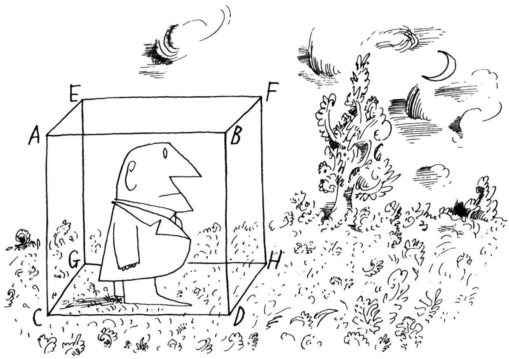

本图来源于《纽约客》1960年9月10日。
Saul Steinberg，Untitled drawing，ink on paper.
Originally published in The New Yorker，September 10，1960.
©The Saul Steinberg Foundation/Artists Rights Society（ARS），New York
在大学学习期间，我第一次对社会心理学感兴趣，因为它涉及人类最令人兴奋的方面：爱、恨、偏见、攻击性、利他主义、社会影响、从众等等。在那个时候，我并不太在意这套令人印象深刻的知识体系是如何形成的，而只是想知道大家从中得到了些什么知识。直到考入研究生院，我才突然意识到我可以不仅仅是这些知识的消费者，也可以成为生产者。一个全新的世界向我打开了：科学社会心理学的世界。我学会了如何提出有意义的问题，并通过实验研究来找到这些问题的答案，以我的绵薄之力，为我在学生时代接触过的相关知识体系作出自己的贡献。从那时起，我便热情地投入到这项活动之中。
阅读这一章的内容并不会帮助你成为一位科学家。我不敢有如此奢望，但这样的期待无疑是重要的。我的目标是帮助你提高科学地思考我们的社会世界中正在发生事情的能力。我一直觉得这是一件很有用的事情，但有时也会令人大失所望。几年前，我曾拿起一本《纽约客》，读到詹姆斯·库宁（James Kunen）1撰写的一篇有关监狱里大学教育项目的内容丰富的佳作。库宁热情洋溢地描绘了这类项目的有效性。随后，他又谴责了这样一个事实，即国会中主张进行普遍惩罚的多数派将这些项目定性为浪费和对罪犯的放纵，并正在试图取消这些项目。
库宁的文章中包含了一些生动的案例，讲述了一些囚犯在狱中完成大学学业，获释后继续过着有意义生活的故事。这个案例是令人感动的。但是，作为一名科学家，我想知道是否有系统的数据可以用来评估这个项目的整体效果。噢，是的。库宁报道了纽约州惩教署的一项研究，该研究发现，在获释四年之后，在监狱中完成一年或多年高等教育的男性囚犯的再犯率比所有男性囚犯的平均水平低20%。
听起来不错，对吧？让我们仔细思考一下。作为科学家，我们需要质疑一个基本而且重要的问题：在参加这个项目之前，那些报名参加这个项目的囚犯是否同那些没有报名参加的囚犯类似？是否有可能是那些报名参加并完成了一年课程的囚犯与那些没有报名的囚犯一开始便存在差异（比如，动机、能力、智力、先前的教育、心理健康状况等等）？如果他们一开始就不同于一般的囚犯，那么即使没有上过任何课程，他们的再犯率也很可能（或者至少是有可能）较低。如果是这样的话，那么并非这个项目导致了较低的再犯罪率。
当我阅读库宁的文章时，我身上的“人文主义者”对这项研究的结果感到兴奋。如果有令人信服的数据证明教育囚犯是有回报的，那将是非常了不起的。但是，唉，我体内的“科学家”主宰了我，对此持怀疑态度。因此，通过科学家的眼光看待社会世界需要我们面对自己的偏见和偏好。但它也使我们能够将小麦和谷壳分开，这样，作为利益相关的公民，我们可以要求对创新项目进行适当的评估。通过这种方式，我们可以在一定程度上清晰地确定：在数千个可能的项目中，哪一些值得我们投入时间、精力和金钱。事实是，正如你将看到的，在大多数情况下正确地进行实验研究并不困难。
什么是科学方法
科学方法——无论是应用于物理学、化学、生物学还是社会心理学——是我们人类满足对知识和理解渴望的最好方法。我们试图利用科学方法揭示事物之间的合乎规律的联系，无论这些事物是化学物质、行星，还是导致人类偏见或爱的原因。
科学过程的第一步是观察。在物理学中，一个简单的观察可能是这样的：如果我孙女的玩具马车里有一个橡皮球，她把马车向前拉，那球似乎滚到了马车的后面（它实际上并没有向后滚动，只是看起来是那样的）。当她突然停下马车时，球就冲到马车的前面。在社会心理学中，一种简单的观察可能是这样的：当我在餐桌上等待的时候，假如碰巧我心情不错，我对顾客微笑似乎要比我心情不好、不太微笑的时候多一些。
下一步是猜测为什么会发生这种情况；这个猜测是我们试图揭示我所提到的“合乎规律的联系”。第三步是把这个猜测变成一个可检验的假设。最后一步是设计一个实验（或一系列实验），以证实或推翻假设。如果一系列设计完美且实施良好的实验不能证实这一假设，我们便会放弃它。正如我最喜欢的物理学家理查德·费曼（Richard Feynman）2曾经说过的那样：“无论猜测有多完美，猜测者有多聪明、多有名望都无关紧要；如果实验不能证明猜测，那么猜测便是错的。我个人认为，这既是科学的本质，也是科学的魅力。科学中没有神圣不可推翻的真理。”
在我看来，科学和艺术是相容的，在我们的科学中有足够的空间可以容纳艺术。我相信这两种过程——艺术和科学——是不同的，但却是相关的。帕维尔·塞莫诺夫（Pavel Semonov），3一位杰出的俄罗斯心理学家，对二者之间的差异作了很好的界定：作为科学家，我们仔细观察我们的环境，试图以一种明智而有意义的方式组织未知的事物；作为艺术家，我们重新组织已知的环境，以创造出一种全新的事物。对于这一观察，我要补充一点，一个好的实验常常需要来自这两个领域的技能。确定无疑的是，作为实验者我们需要利用艺术来丰富我们的科学。我相信在社会心理学实验中尤其如此。
为什么这种艺术与科学的结合，在社会心理学中尤为重要呢？在社会心理学中，我们并没有研究烧杯里的化学物质或玩具马车里的橡胶球的运动变化；我们正在研究的是那些一生都生活在社交世界中的成年人的行为，以及他们带给这个世界的所有情感、感知、信仰、偏见和经历。不用说，就像研究他们的实验者一样，作为我们实验被试的人，对于是什么导致了他们的感受和行为，以及他们周围的人的感受和行为，已经形成了自己的想法和理论。当你用化学物质、实验动物，甚至在非社交环境下用人类做实验时，情况则完全不同。
事实上，我们面对的是具有社会经验的人，这也是社会心理学作为实验研究课题如此令人着迷的原因之一。与此同时，如果实验者有机会得出有效和可靠的研究发现，这种情况也需要大量的技巧。在本章中，我将尝试准确地说明这一切是如何做到的。
从推测到实验
在第8章中，我讲述了约翰·F·肯尼迪总统的故事，在犯了一个代价巨大的错误后，他的声望反而迅速上升。在他被称为“猪湾惨案”的悲剧性误判之后，盖洛普的一项民意调查显示，人们对他的喜爱程度反而比发生那件事之前更高。像大多数人一样，我被这个事件惊呆了。他把事情搞砸了，我们怎么会更喜欢他呢？作为一名科学家，我可以推测出是什么导致了这种转变。我的猜测是，因为肯尼迪以前被认为是一个近乎完美的男人——英俊、热情、迷人、机智、能干——犯错误可能会让他显得更有人情味，从而让普通人产生对他的亲近感。
这是个有趣的猜测，但果真如此吗？我们该如何去找出答案呢？我们可以简单地问人们，为什么他们现在比前一周更喜欢肯尼迪。这听起来很简单。不幸的是，这并不容易做到，因为社会心理学家已经认识到，人们往往不知道为什么自己会以某种方式行事，或者为什么会改变自己的信念。所以，在一种复杂的情况下，仅仅要求人们解释他们的行为，通常不会产生可靠的结果。4这正是社会心理学家进行实验的原因。但我们怎样对约翰·F·肯尼迪的受欢迎程度进行实验研究呢？我们做不到这一点。在这种情况下，我们会尝试对深层的现象进行实验，而不是针对具体的案例。事实上，真正让我感兴趣的是深层的现象，而不是具体的事件：犯错是否会增加一个近乎完美的人的受欢迎程度？
因此，我和我的同事们设计了一项实验，5让我们能够控制无关变量，并在不太复杂的情况下考察错误对吸引力的影响，在这种情况下，我们可以控制错误的确切性质，以及犯错误的人的类型。在一种简单的情况下，正如我们所预测的那样，我们发现“近乎完美的人”在犯错误后会变得更有吸引力，而“相当普通的人”在犯了同样的错误后会变得不那么有吸引力。（在第8章中我描述过这个实验的细节。）
正如你所看到的，在进行控制的过程中，实验者必须把他（她）的想法从纷繁复杂的现实世界中剥离出来，带到实验室相当纯净的环境中。这通常需要策划一个与最初产生这个想法的实际情况几乎没有相似之处的场景。事实上，经常有人会批评，实验室里的实验是不现实的，是对人类互动的人为模仿，根本不能反映真实世界。这种批评有多准确？
也许回答这个问题的最好方法是详细地剖析一个实验室实验，能够通过它来分析实验室实验的优点和缺点，并考察另外一种可能用于研究同一问题的更现实的方法。我与贾德森·米尔斯6合作进行的启动实验非常适合这个目的，因为它包含了实验室的许多优点和缺点。你可能还记得，米尔斯和我假设，如果人们经过努力才得到的东西，他们可能会更加珍惜。之后，我们设计并实施了一项实验室实验，在实验中，我们发现那些花费大量精力（通过严格的入会仪式）获得团体成员资格的人，比那些几乎没有或根本没有努力成为团体成员的人更喜欢团体。下面便是我们对这个实验的设计。
聚焦阿伦森-米尔斯实验 63名大学女生参与了这项研究，她们最初自愿参与了几次关于性心理学的讨论。每个学生都单独接受了测试。一开始，我向她们解释这是一项有关“小组讨论过程的动力学”的研究。我告诉大家，讨论的实际话题对我来说并不重要，但因为大多数人对性感兴趣，所以我选择了这个话题，以确保有足够多的被试参与。我还解释说，我在选择性作为讨论主题时遇到了一个很大的阻力：不少人会很害羞，很难在群体中讨论性。因为任何阻碍讨论进程的因素都可能使结果严重失效，所以我需要知道女性是否对讨论性感到犹豫。当她们听到这些话的时候，每个人都声称自己不会有困难。
这些详尽的说明为活动的开展奠定了基础。到目前为止，所有被试所听到的指导语都是相同的。现在我们可以给每一位处在不同实验条件下的女性不同的体验了——我们的实验人员相信这些体验会带来不同。
我们事先将被试随机分为三种条件下的一种：（1）三分之一的被试会经历严苛的入会仪式；（2）三分之一的被试会经历温和的入会仪式；（3）三分之一的被试不需经历任何入会仪式。在没有入会仪式的条件下，被试们只是被告知现在她们可以加入讨论小组了。但是，在严苛的和温和的入会仪式条件下，我会告诉每一位被试，由于必须确认她能否公开地讨论性问题，我们编制了一套筛选工具——窘迫测验，稍后我会让她进行这项测验。这个测试会形成启动效应。在严苛的入会仪式条件下，测验会令她十分窘迫。它要求被试背出12个淫秽词语以及从当代小说中节选的两段有关性行为的详细描述。这听起来可能不像是一个“严苛”的入会仪式，但请相信，很多年前当我们实施这项研究的时候，大声说出这些话是令人痛苦的。处于温和入会仪式下的被试只需背出一组与性有关但并不淫秽的词语。
在这项研究中，被试所分配到的三种条件构成了独立变量（independent variable）。每个研究者在设计和进行实验时的目标都是确定被试的行为是否对他们的反应产生影响。我们的目标是确定加入仪式的严苛程度——独立变量——是否导致被试行为出现的系统性差异：经历过严苛入会仪式的被试与经历温和入会仪式或完全没有入会仪式被试的行为是否存在差异？
那么以何种方式来诱发被试的差异性行为呢？入会后，每位被试都被允许偷听她刚刚加入组织成员间正在进行的讨论。为了控制这些材料的内容，我们使用了录音带，但告诉这些女生她们听到的是一场现场讨论。通过这种方式，我们确保所有被试——不管她们是否经历过严苛的入会仪式、温和的入会仪式或没有经历入会仪式——都听到了相同的讨论。这场讨论非常枯燥乏味。录音带上的人发言时会停顿很长时间，结结巴巴，支支吾吾，断断续续，语无伦次，口齿不清。内容涉及低等动物的第二性征，诸如鸟类羽毛的变化、某种蜘蛛交配舞蹈的复杂性，等等。
在讨论结束时，我带着一套等级量表回来，请每位女生对讨论的有趣程度和价值进行评分。这个反应被称为因变量（dependent variable），因为从字面上讲，这个反应被假定为“取决”于被试所分配到的特定实验条件。因变量是实验者用来评估自变量所造成影响的指标。简言之，如果自变量是原因，那么因变量就是结果。
研究结果支持了我们的假设：经历过温和入会仪式或根本没有经历入会仪式的女生听到了小组讨论的内容，并将其评为枯燥乏味。但是那些为了被接纳而遭遇过尴尬的人却认为所听到的一切很令人兴奋。不要忘记，所有学生都在对完全相同的一场讨论进行评价。
为什么要进行实验研究？ 设计和实施这个实验是一个相当费力的过程。米尔斯和我花了数百个小时进行策划，创造一种可信的情境，为小组讨论的录音撰写脚本（这是十分有趣的一件事情），对小组成员角色的扮演者进行排练，构建启动程序，准备测量工具，招募志愿者作为被试，对程序进行试测，让被试参与并完成实验，最后还要向她们解释实验的真正目的（对她们进行欺骗的原因，整个研究的全部含义，以及我们希望了解的内容）。我们发现，那些经历过严苛入会仪式的人比那些经历温和入会仪式、或根本没有入会仪式的人更喜欢这个组织。
一定会有更简单的方法！的确如此。你可能已经注意到我们的实验程序与其他入会仪式之间的相似性，例如一些大学兄弟会和其他高级俱乐部或组织使用的入会仪式。那么，我们为什么不利用现实生活中的情境呢？现实生活中的情境不仅更容易研究，而且更为生动、更具现实性。让我们来看看它的优点。现实生活中的入会仪式会更加严苛（例如，它们会对成员产生更大的影响）；我们不需要花费如此大的精力来设计一场让被试信服的组织讨论；社会互动是在真实的人之间进行的，而不是磁带上录下的声音；我们还可以避免以科学的名义进行欺骗以及给被试带来困难和不愉快经历所造成的道德问题；最后，这一切都比实验研究花费更少的时间。
因此，当我们审视自然环境的表面优势时，如果我们研究现实的兄弟会，米尔斯和我的工作会简单得多，这便是我们可能会做的。我们本可以根据每个兄弟会入会仪式的严苛程度对其入会程序进行评价，随后对其成员进行访谈。如果那些经历过严苛入会仪式的成员比那些经历温和入会仪式或没有入会仪式的成员更喜欢他们的兄弟会，那么这个假设便会得到证实。让我们仔细分析一下为什么人们还会费心费力去进行实验研究。
当我让我的学生指出实验室实验最重要的特点时，大多数人都说是“控制”。实验的优势是对环境和变量的控制，这样每个变量的影响就可以被精确地加以考察。通过把我们的假设带到实验室，米尔斯和我消除了现实世界中存在的许多无关变量。严苛的入会仪式是同等的；如果我们使用了几种严苛程度兄弟会加入仪式，这种情况将很难匹配。此外，对所有被试来说，小组讨论是相同的；然而，在现实世界中，兄弟会成员可能会对兄弟会进行评级，事实上，这两者是不同的。假设我们发现了新成员对严苛入会仪式的兄弟会与温和入会仪式的兄弟会喜爱程度不同，我们怎能知道这种区分是由加入仪式造成的，还是在兄弟会中已经存在相似性差异的组织成员本身所固有的？在实验中，唯一的区别是启动（入会仪式的严苛程度），所以我们可以知道任何差异都是源自我们所设计的那个仪式。
随机分配的重要性
控制是实验室实验的核心环节，但不是主要优势。一个更重要的优势是被试可以被随机分配到不同的实验条件下。这意味着每个被试在研究中处于任何条件下的机会都是同等的。事实上，对被试条件的随机分配是实验方法和非实验方法的关键区别。将人们随机分配给条件的最大好处是：理论上，任何没有完全控制的变量都是随机分布在不同条件下的。这意味着这些变量绝对不可能对研究结果产生系统性的影响。
我们可以通过一个例子来说明这一点。假设你是一位科学家，你有这样一个假设：与聪明女人结婚的男人比与不那么聪明女人结婚的男人更幸福。你会如何检验这个假设？假设你继续寻找1000个娶了聪明女人的男人和1000个娶了不那么聪明女人的男人，然后你让他们回答一份幸福感问卷。你看，娶了聪明女人的男人比那些娶不聪明女人的男人更幸福。这是否意味着娶一位聪明的女人会让一个男人快乐？未必如此，也许快乐的男人更可爱、更幽默、更容易相处，因此，聪明的女人会寻找这类男人并嫁给他们。所以幸福可能会导致男人娶聪明的女人。然而，问题并未就此结束。也有可能是第三个因素导致幸福以及去娶一位聪明的女人。其中一个因素可能是金钱；也许富有会让男人快乐，富有才是吸引聪明女人的原因。所以这两种因果关系都可能不是真实的：幸福不会导致男人娶聪明的女人，聪明的女人也不会导致男人幸福。
实际上问题更为复杂，因为我们通常不知道第三个因素是什么。在有关幸福的研究中，既可能是财富，也可能是某种成熟的人格，使得男人感到幸福并且吸引那些聪明的女人。发挥作用的还可能是社交风度、运动能力、权力、声望、使用合适的牙膏、穿着酷炫，或者是可怜的研究人员不知道、也不可能解释的上千种品质中的任何一种。但假如研究者进行一项实验研究，他（她）就能够将被试随机地分配到不同的实验条件下。尽管这种方法不能排除诸如金钱、社交风度、运动能力或着装风格之类的变量所造成的差异，但是通过将这些特征随机地分布在各种实验条件下，便可以将这些差异抵消。也就是说，如果被试被随机地分配到各种实验条件下，处于某种实验条件下的富人，与其他实验条件下的人数接近；处于某种实验条件下社交能力强的人，与其他实验条件下差不多相同；处于某种实验条件下的运动能力强的人，与其他条件下的运动能力强的人数量相似。这样，假如我们的确发现不同的实验条件之间存在差异，那么这种差异便不可能是个体在某一特征上的差异所造成的，因为所有的这些特征都平均地（或接近平均地）分布于各种实验条件之中。
诚然，聪明的女士和她们幸福的丈夫这样的特例，是不容易在实验室实验中加以控制的。但让我们想象一下，如果存在这种可能的情况下我们会如何去做：理想情况下，我们会选取50个男人，随机分配其中25人娶聪明的女人，25人娶不聪明的女人。几个月后，我们再回来对他们测试幸福问卷。假如那些被指定与聪明的女人结婚的男人，比那些被指定与不太聪明的女人结婚的男人更幸福，我们便会搞清楚是什么导致了他们的幸福。我的确做到了这一点！简言之，他们的幸福并不能轻易地归因于社交风度、英俊、金钱或权力；这些特征都是随机分布在各种实验条件中的。几乎可以肯定，妻子的性格是导致他们幸福的原因。
这个例子纯粹是虚构的。即使是社会心理学家也一定不能按科学目的安排婚姻！但这并不意味着我们不能在受控制的实验室条件下测试有意义的相关事件。本书中有许多这样的例子。让我们将其中之一作为对实验方法优势的一种阐释：儿童通过电视观看暴力的时间与他们选择积极解决问题的倾向之间的相关性（见第6章）。
这是否意味着在电视上观看攻击性节目会导致青少年变得好斗？未必如此，但有可能。这也可能意味着好斗的孩子喜欢观看攻击性节目，如果他们整天看芝麻街，他们也会同样好斗。但是后来，正如我们所看到的，一些实验者证明观看暴力节目会增加暴力。7他们是怎样研究的呢？研究人员随机将一些孩子分配到一种情境中，让他们观看一段暴力电视剧的视频，在这段视频中，人们互相殴打、撕咬、拳击、加害，持续了25分钟。作为对照组，实验者随机将其他孩子分配到另外一种情境中，让他们观看同样长度的体育赛事。这里的关键是：每个孩子都有同等的机会被选择观看暴力视频和非暴力视频；因此，在这两种实验条件下，孩子们在人格倾向方面的任何差异都被抵消了。最终，研究发现，观看暴力视频的青少年比观看体育赛事的青少年后来变得更具攻击性，这有力地证明，观看暴力节目可能导致暴力。
你可能回想起，这正是我在本章开头所描述的监狱高等教育项目评估的问题：那些自愿参加该计划的犯人，可能在很多方面与没有意愿参加的犯人存在差异。因此，将二者的再次犯罪率进行比较是一种误导。这种比较可能让这项计划看上去比实际效果更好。那么，如何来解决这个问题呢？一种方法是尽可能多地吸引两倍的志愿者参加这个项目。然后你可以随机选择一半的志愿者参加这个项目，并将另外一半置于控制条件下。如果选择真正做到了随机，对这两组犯人的再次犯罪率进行比较，便可以让你得到有意义的数据。
让我们回到初始实验。如果我们进行了一项调查，发现严苛入会条件的兄弟会成员比温和入会条件的兄弟会成员更喜欢对方，那么我们就有证据表明，入会条件的严苛程度与对其他成员的喜爱是正相关的。这意味着入会条件越严苛，会员越喜欢他的兄弟会。然而，无论这两个变量之间的相关性有多强，我们不能仅依据我们的调查数据便得出结论：严苛的入会条件会导致会员对群体的喜爱。从这类调查中我们只能得出结论：这两个因素是相互关联的。
极有可能在一个兄弟会中，严苛的入会条件和对其他成员的喜爱之间存在正相关，这不是因为严苛的入会条件使成员更喜欢他们的团体，而是因为相反的原因。这可能是因为该组织的高个人吸引力导致了严苛的入会条件。如果团队成员将自己视为精英，他们可以通过维持团队的精英性来保持这种势头。他们可能会试图通过要求严苛的入会条件来阻止那些缺乏活力者的加入以维持群体的精英性。仅从我们的调查数据来看，我们不能得出这样的结论：这种解释是错误的，严苛的入会条件的确会导致人们的珍惜。这些数据没有给我们作出选择的依据，因为它们所提供的不是一种因果关系。
此外，正如我们所看到的，第三个变量可能导致严苛的入会条件和好感。有谁愿意施加或者接受严苛的入会条件呢？当然是那些有着强烈虐待狂倾向的人。这样的人可能彼此喜欢，不是因为入会条件，而是因为“鸟以群分”（在本例中是非常残忍的鸟）倾向于彼此喜爱。虽然这听起来可能是一个奇怪的解释，但这的确是一种可能。更让研究者痛苦的是他（她）甚至根本不会想到的无数其他解释。实验方法基于对实验条件的随机分配技术，可以将这些问题一下子破解。本实验中的虐待狂患者被分配到没有入会仪式的概率与严苛入会条件的概率相同。而在现实世界的研究中，他们之中几乎所有人都会将自己分配到严苛入会条件下，从而使结果变得不可理解。
社会心理学实验的挑战
并非所有的实验都令人欢欣鼓舞，实际上进行实验面临着一些严重的问题。控制原本是实验的重要优势之一，但要完全控制人类被试的环境是不可能的。许多心理学家研究老鼠而不是人的原因之一是，研究人员能够控制被试从出生到实验结束所发生的几乎所有事情：气候、饮食、运动、与玩伴的接触程度、没有创伤经历，等等。社会心理学家不会将人类被试关在笼子里来控制他们的体验。虽然这样做可以为被试创造一个更快乐的世界，但以这种方式进行科学研究则不免有些草率。
控制与影响 由于个体之间在细微之处存在无数差异，控制会进一步受到限制。社会心理学家试图对人们的行为作出说明。当然，我们指的是大多数人在给定条件下的大部分时间里所做的事情。如果我们的结果中存在着无法测量的个体差异，那么我们的结论便可能并不适用于所有人。态度、价值观、能力、个性特征和近期经历的差异会影响人们在实验中的反应。因此，即使我们有能力控制实验情境本身，同样的情境可能不会以完全相同的方式影响每个人。
此外，当我们成功地控制了实验环境，使每个人的实验环境都完全相同时，我们就冒着使情况变得枯燥无味的风险，以至于被试不愿意认真对待它。“纯净”一词至少有两种含义：（1）无菌；（2）无效或乏味。实验者应努力使实验环境尽可能“纯净”，而不使其变得乏味或对被试不利。如果被试没有发现实验中的事件有趣且引人入胜，他们的反应很可能不会是自发的，因此，我们的结果也将毫无意义。
所以，除了控制，实验必须能够对被试产生影响。他们必须认真对待这个实验并参与其中，否则便不可能对他们的行为产生影响。社会心理学家面临的困难是，影响和控制这两个关键因素往往从相反的方向起作用：随着一个因素的增强，另一个因素往往会减弱。实验人员面临的困境是如何在不牺牲对情境控制的前提下最大限度地影响被试。在设计和构建实验情境时，解决这一困境需要相当强的创造力和独创性。这便引出了现实性的问题。
现实性 在本章开头，我提到了对实验室实验的一种常见的批评，那就是它们是对世界的人为操作和人为的模仿——它们不是“现实的”。我们所说的现实是什么意思？几年前，在撰写有关实验方法的文章时，我和默内尔·卡尔史密斯8试图准确界定现实的含义。我们的理由是，一个实验可以通过两种不同的方式获得现实性：第一，如果一个实验对被试产生影响，迫使他们认真对待这个问题，并让他们参与到实验中，我们可以说它已经实现了实验的现实性；第二，如果实验室实验与外界经常发生的事件相似，我们可以说它已经实现了世俗的现实性。通常，实验现实性和世俗现实性之间的混淆，导致了对实验是人为的和毫无价值的批评——因为它们不能反映现实世界。
这两种现实性之间的区别可以用一个例子来很好地加以说明，这个例子是一个高水平的实验现实性且低水平的世俗现实性研究。回想一下斯坦利·米尔格拉姆在第4章中所做的实验。在那个实验中，每个被试都被要求向另一个人施以强度越来越大的电击，而这个人被认为是连接在相邻房间的电子设备上。现在，老实说，在日常生活中我们会被要求给人们施以电击吗？这种设计在日常生活中是不可能发生的。这个过程是否具有实验的现实性——也就是说，被试是否全神贯注于其中，他们是否在认真对待它，这种安排是否对他们产生了影响，在那个时刻所发生的一切是否是他们现实世界的一部分？或者他们只是在演戏，没有认真对待，在装腔作势、敷衍了事？米尔格拉姆报告说，他的被试经历了很大强度的紧张和不适。但在这里我想让米尔格拉姆用他自己的话来描述，一个典型的被试是怎样反应的。
我观察到一个成熟的、最初沉着的商人微笑着、自信地走进了实验室。不到20分钟，他便受到了严重的伤害，他抽搐、结巴，正迅速接近神经崩溃的边缘。他不停地拉扯耳垂，搓揉双手。有一次，他把拳头按在前额上，咕哝道：“天哪，让我们停下来吧。”然而，他仍然对实验者的每一句话都做出了回应，并一直服从到最后。9
这看起来不像是一个人在脱离现实情境下的行为。在米尔格拉姆被试身上的所发生的事情是真实的，尽管他们在日常生活中并没有发生。因此，如果在现实世界中发生了一系列类似的事件，那么得出这样一个结论似乎是可靠的：这个实验的结果是对人们反应方式的相当准确的展示。
欺骗 对于实验现实性的重要性，怎么强调也不过分。达到这一基本质量要求的最佳方法是设计一个对被试有吸引力和趣味性的环境。同时，还经常有必要掩盖研究的真实目的。为什么需要加以伪装呢？
在这本书的开头，我曾提到几乎每个人都是一个业余的社会心理学家，从这个意义上说，我们都生活在一个社会世界里，并不断形成对发生在我们身上的事情的假设。对于那些参与我们实验的人来说也是如此。因为他们总是想弄清楚事情的真相，如果他们知道我们想得到什么，他们可能会倾向于以符合他们自己假设的方式行事，而不是以对他们来说自然和平常的方式行事。因此，实验者试图向被试隐瞒实验的真实性质。因为我们几乎总是和聪明的成年人打交道，这不是一件容易的事情；但在大多数实验中，如果我们有机会获得有效和可靠的数据，这便是一种绝对需求。
这一需求将社会心理学家置于一位电影导演的位置，他在为演员们的表演搭建舞台，却不告诉演员们这部戏的全部内容。这样的场景被称为掩饰性情节（cover story），旨在通过创造一种被试可以自然行动的场景来增加实验的真实性，而不是因为知道研究的是哪种行为而受到制约。例如，在阿伦森-米尔斯的入会仪式研究中，我们告诉被试，她们正在参加一个尴尬测试，以筛选她们是否可以加入某个讨论性心理学的小组。这是掩饰性情节，纯粹是欺骗。在现实中，我们让她们参加一个入会仪式，看看这会对她们喜欢这个团体产生什么影响。如果被试在参与之前就知道研究的真正目的，那么结果将完全没有意义。
事实上，有关这个问题的研究已经表明，如果被试知道了实验的真正目的，她们不会表现得很自然，而是试图以一种让自己处于良好状态的方式来表现，或者试图以一种能够帮助实验者的方式来“帮助”实验者。最终，实验结果所展现的恰恰是被试所预期的。这两种结果对实验者来说都是灾难性的。实验者通常可以成功地抑制被试帮助他人的欲望，但却难以抑制被试展示自己好的一面的欲望。大多数人不想被认为是顺从的、软弱的、不正常的、依赖的、不吸引人的、愚蠢的或疯狂的。因此，如果有机会搞清楚实验者的研究目的是什么，大多数人都会努力让他们自己看起来很好，或者表现得像他们自己所认为的那么“正常”。例如，在一项专门研究这种现象的实验中，10当我和同事告诉被试某种结果意味着他们具有良好的人格特质时，与让他们知道同样的结果表明他们具有不良的特质相比，他们会更多地做出导致这种结果所必需的行为。尽管这种行为是可以理解的，但它的确会妨碍我们得到有意义的结果。因此，实验者发现有必要对被试隐瞒实验的真实性。
为了说明这一点，让我们再来看看所罗门·阿希11关于从众的经典实验。回想一下，在这项研究中，一个学生被分配了一项简单的任务来判断几条线段的相对长短。但是其他几个学生（他们是实验者的同伙），故意做出了一个错误的判断。在这种情况下，相当一部分被试屈服于隐含的群体压力，作出了错误的判断。被试被欺骗了：他们以为自己是在参与一项有关感知的实验，但实际上他们是在研究从众。这种欺骗有必要吗？我想是的。让我们设想一下没有欺骗的情况：想象着你在参与这项研究，实验者对你说，“我对研究你在面对群体压力时是否会从众很感兴趣”，然后他告诉你接下来会发生什么。我猜你不会从众。我的猜测是，几乎没有人会随大流，因为随大流被认为是一种软弱和没有吸引力的行为。实验者会得出什么结论呢？人们倾向于不墨守成规？这样的结论将是错误的，并会造成误导。这样的实验毫无意义。
在米尔格拉姆有关服从的实验中，大约65%的普通市民愿意按照实验者的命令给另一个人施加强烈的电击。然而，每年当我向我班上的学生描述实验情况并问他们是否会服从这样的命令时，只有1%的学生表示自己会服从。这是否意味着我的学生比米尔格拉姆的被试更友善呢？我不这么认为。我认为这意味着，假如有一半的机会，人们会努力让自己看起来更好。因此，除非米尔格拉姆使用欺骗手段，否则他得出的结论根本不能反映出人们在被引导相信自己身处真实情境时的行为方式。如果我们给人们一个机会，让他们坐下来，轻松自如地猜测他们在某种情况下会如何表现，我们看到的将是人们希望自己怎么表现，而不是人们实际怎么表现。
重复问题 科学探究不会在实验结束时终止。很少有一个实验能给我们最终的答案，哪怕是一个结构完美、结果清晰的实验。科学过程的下一步是重复，在重复过程中，其他实验室的其他研究人员将会重复最初的研究。重复有助于澄清研究，确定它适用的条件和不适用的条件，以及它最适用的对象。例如，它是否只适用于年轻人、美国人和大学生，或老年人、欧洲人和蓝领工人？重复也可以确定这种现象是稳健的、持久的还是偶然的。如果科学家无法重复原始结果，有两个必居其一的原因：他们没有准确或适当地进行重复，或者原始研究者的结论是有局限的或错误的。
在本章早些时候我说过，完成一项好的实验既是艺术问题也是科学问题。举个例子，当我和同事们一起做失调实验时，我花费了大量时间来把事情做得恰到好处，就像我所说过的，我们既像电影导演也是科学研究人员。“科学”部分比“艺术”部分更容易重复。毕竟，我可以在餐馆里吃到美味的蛋奶酥，对厨师的创意印象深刻，所以我马上买了他的食谱，指导自己如何做出完美的蛋奶酥。我可以用他的配方来尝试“重复”这个创意，但我保证我的配方看起来（和尝起来）更像一块砖头，而不是他那轻软蓬松的糕点。理论和程序就像食谱。有时，失败的重复是技术的失败，是对配方的误读，而不是假设的错误。
有时，重复会在原始实验者的程序、数据分析甚至无意的偏见中发现错误。20世纪70年代进行的一项出色的、确实令人难以抗拒的研究表明，新生婴儿会模仿成年人的面部表情（例如，实验者伸出舌头，婴儿也会伸出舌头），这表明婴儿生来就有模仿的能力。但是，最近进行的一项控制得更好的实验发现，这种模仿技巧是婴儿从大约6个月大的时候开始习得的。12
最后，有时虽然重复会失败，但这样做揭示了一个以前未知的、缺失的成分，该成分对最初的研究至关重要，但在重复研究中却不起作用。考虑一下这样一项研究：少数族裔学生在撰写描述个人重要价值的文章后，比另一组撰写有关他人价值文章的学生获得了更高的分数。13这是一个戏剧性的发现，所以有很多人尝试重复，但只有一些人成功了。这是否意味着原始研究是错误的？绝非如此。事实证明，这种干预措施并非对每一所学校都有效；只有在对少数族裔学生有很大偏见的学校里才会被成功地重复。14
然而，在社交媒体的推动下，所有科学领域都出现了一个新问题：而今一些“热门”发现立刻会引起人们的关注（通常是在一场TED[1]演讲之后），而当其他研究人员试图重复这些发现时，这些“热门”发现往往会冷却下来。以下是一些研究的例子，这些研究在网上流传，但没有得到其他实验者的支持：阅读一份与年龄相关的单词列表会触发“老年人”的形象，让年轻人走得更慢；洗手会让你感到不那么内疚；在你工作的房间里张贴一张男人眼睛盯着你的海报，会让你更诚实；嗅一嗅“拥抱荷尔蒙”催产素会让你更有同情心，而捧着一杯温暖的咖啡会让你感觉更被爱。其中最受欢迎的是所谓的“力量姿势”：双手放在臀部，伸展姿势会让人感到更大胆、更有自信，甚至会增加睾丸激素水平。不久前，一位研究人员写了一本畅销书，并发表了一场TED演讲，成为TED历史上最受关注的话题之一：“你的肢体语言塑造了你自己。”（事实上，这一观点变得如此流行，如果全世界有数百万人这样做，我也不会感到惊讶。）很不幸，这项研究的许多重复都没有产生明显的效果，特别是有关睾丸素水平的说法及其持续性效果。约瑟夫·西蒙斯（Joseph Simmons）和乌里·西蒙索恩（Uri Simonsohn）15对随后发表的33项研究进行了统计分析，这些研究使用了比原始研究大得多的样本，所得出的结论是：“现有证据太弱，不足以……提倡人们为改善生活而摆出力量姿态。”
不幸的是，如今许多流行的社会心理学“发现”引起了公众的注意，却没有通过重复研究。16但这并不意味着社会心理学实验的基本方法是错误的——这意味着科学正在按照它应该的方向前进——纠正它的错误，并推广那些站得住脚的发现。然而，这也意味着，公众应该警惕那些耸人听闻的、不可能的或过于简单的发现，要善于质问：“它们是否得到了重复？”
伦理问题
使用欺骗可能是获得关于人们在复杂情况下行为方式有用信息的最好（通常也是唯一的）办法，但它确实给实验者带来了三个伦理问题。
1.说谎是不道德的。在当今充斥着“假新闻”和政客们明目张胆谎言的世界里，社会科学家们能够为当前存在的欺瞒之风作出辩解吗？
2.欺骗经常导致侵犯隐私。当被试不知道实验者真实的研究目的时，他们就无法给出他们的知情意见。例如，在阿希的实验中，如果一些学生事先知道阿希感兴趣的是考察他们从众的倾向，而不是他们的感性判断，他们可能不会同意参与。
3.实验过程通常包含一些不愉快的经历，如痛苦、无聊、焦虑或尴尬。
即使不使用欺骗手段和极端的实验程序，也会出现伦理问题。有时候，看起来最人性化的程序，也能以一种难以预料到的方式深刻地影响到少数被试——即便实验者特别谨慎、对他们特别关心。我们可以罗宾·道斯（Robyn Dawes）、珍妮·麦克塔维什（Jeanne McTavish）和哈丽特·沙克莉（Harriet Shaklee）17所做的关于“社会困境”的系列实验为例，通常被试面临着与伙伴合作或“逃离”的选择。
如果每个人都合作，那么人人都会从经济上受益；但如果一个或多个被试选择逃离，他们将获得高额回报，而选择合作的人经济则会受到损失。回答是匿名的，在整个研究过程中都是匿名的。在实验开始时，会向所有被试充分解释游戏规则，并不加以隐瞒。这种情况看起来是无害的。
但在一次实验之后24小时，一名男子给实验者打来了电话。他是这群人中唯一的逃离者，赢得了190美元。他想把赢来的钱退还给其他被试（那些选择合作的人，这样每人只赢了1美元。他说，他对自己贪婪的行为感到痛苦，整晚都没睡。在一个类似的实验之后，一位曾经合作过而其他人逃离的妇女报告说，她觉得自己容易上当受骗，并了解到人们不像她认为的那样值得信任。因此，尽管研究人员进行了周密的计划，但这些实验对被试产生了难以预料的强大影响。我的观点很简单但却很重要：没有某种道德规范可以预见所有的问题，尤其是当被试在参与过程中感受到自己或他人的不愉快体验时所产生的问题。
实验社会心理学家非常关注伦理问题，这是因为他们的工作是建立在伦理困境之上的。让我来对此加以解释。这种困境是基于大多数社会心理学家所认同的两种相互矛盾的价值观。一方面，他们信奉自由从事科学研究的价值；另一方面，他们信奉人类的尊严和隐私权。这是一个真正的困境，无论是虔诚地捍卫人类尊严的重要性，还是宣誓效忠科学事业，都不能忽视这一困境。社会心理学家必须正视这个问题，不仅是针对一次具体的实验，而是每次他们设计和进行实验时都必须正视这个问题，因为没有一套具体和普遍的规则或指导方针能够指导每一场实验。
很明显，一些实验技术比其他技术表现出更多的问题。一般来说，使用欺骗的实验是值得关注的，因为欺骗行为本身是令人反感的，即使欺骗是为了揭露真相。而导致痛苦、尴尬、内疚或其他强烈感觉的实验程序，程序会带来明显的道德问题。
当被试自身面临着一些不愉快或消极的感受时，会产生更为微妙但却是不太重要的伦理问题。我们可以回想一下道斯、麦克塔维什、沙克莉实验中一些被试的感受。所罗门·阿希实验中的许多被试知道，他们在面对群体压力时会去从众；我们（阿伦森和梅蒂18）实验中的许多被试知道，他们会在纸牌游戏中作弊；米尔格拉姆的大多数被试也知道，即使自己的服从会明显对他人造成伤害，他们也会去服从权威。
可以说，这种自我发现对被试有治疗或教育上的益处；事实上，许多被试自己已经提出了这一点。但这本身并不能证明这些方法是正当的。毕竟，一个实验者怎么能事先知道它是治疗性的呢？此外，任何一位科学家都会傲慢地认为，他（她）有权利或技能在未经事先许可的情况下为人们提供治疗经验。
鉴于这些问题，社会心理学研究的目的是否可以证明这些方法的合理性？这是一个有争议的问题。有些人认为，无论这门科学的目标是什么，无论取得了多大成就，如果人们被欺骗或感受到一些不适，他们都不值得这样去做。另一些人则坚持认为，社会心理学家正在发现可能对人类有深远意义的东西，因此，我们几乎值得为这些结果付出任何代价。
我个人的观点介于两者之间。我相信社会心理学的科学研究是有价值的，我也认为实验中被试的健康和福利应该自始至终受到保护。当决定某种特定的实验方法是否合乎道德时，我认为成本效益分析是合适的。也就是说，我们应该考虑做实验会带来多大的好处，会给实验被试带来多大的伤害。换言之，将科学和社会价值与被试的成本进行比较，并将此比率输入决策推演中。不幸的是，这样的比较很难进行，因为在实验之前，我们永远无法完全确定实验的收益或危害。
考虑一下服从实验。表面上看，这毫无疑问是一个艰难的过程。但米尔格拉姆在实施实验之前，无法确切地知道这会有多困难。在我看来，这也是一个极具启发性的实验，它教会了我们很多关于人类行为的知识。总的来说，我很高兴米尔格拉姆继续这样做。然而，我知道不是每个人都会同意我的观点。这项实验结果发表后，立即受到大众媒体和严肃科学家的谴责，理由是该研究是否合乎道德。
在公布自己的研究结果几年后，斯坦利·米尔格拉姆带着遗憾和几分苦涩向我透露说，他认为大部分批评都是因为他所取得的结果，而不是他所采用的实验方法，这让我感到很难过，甚至有点痛苦。这本身就引发了一个有趣的问题：如果没有一个被试实施了超过中等强度的电击，那么对米尔格拉姆实验伦理的批评会不会不那么激烈？十多年后，伦纳德·比克曼（Leonard Bickman）和马修·扎兰托内洛（Matthew Zarantonello）19发现，米尔格拉姆的反思是正确的。他们做了一个简单的小实验，让100个人阅读米尔格拉姆实验的方法部分。与那些被告知几乎没有人完全服从的人相比，那些被告知米尔格拉姆的被试中有很大一部分会完全服从的人，认为这个方法更有害（因此，更不道德）。
从更为一般的意义上，我想说的是，当实验结果告诉我们人性中一些令人愉快或讨人喜欢的发现时，任何实验的伦理问题似乎都要比告诉我们一些我们不想知道的发现时少。当然，这并不意味着我们应该把我们的研究局限于发现那些迎合人们观点的结论。米尔格拉姆的服从实验就是一个很好的例子。我相信，如果一位科学家对研究一个人盲目服从权威会在多大程度上伤害他人感兴趣，那么他就没有办法在不引起某种程度不适的情况下做到这一点。
总之，社会心理学家决定是否去进行一项特定的实验取决于其对潜在成本和效益的评估。我一直建议我的学生遵循以下五条准则。
1.如有可能，应尽量避免采用导致强烈疼痛或不适的实验方法。根据正在检验的假设，有些不适可能是不可避免的。
2.如果被试的不适感变得过于强烈，实验者应当给予他们退出实验的真正选择自由。
3.在使用隐瞒程序时，实验者应当保持警惕。如果能够找到其他可行的程序，应当予以采用。
4.实验结束时，实验者应花相当多的时间与每一位被试交流，仔细解释实验的细节、真实目的以及欺骗或导致他们不适的原因。在“纾解”（debriefing）阶段，他们应该设法保护被试的尊严，避免让他们觉得自己愚蠢或容易上当受骗。他们应该确保被试在离开现场时情绪良好，对自己和他们在实验中的角色感觉良好。任何一位真诚的实验者，只要愿意投入时间和精力（用信息和体贴）来回报每个被试在科学事业中发挥的重要作用，都可以做到这一点。
5.最后，实验者不应该去实施那些靠欺骗或制造不适感的实验，在进入实验室之前，实验者应该确定他们的实验是正确的和值得的，他们正在寻找一个有趣的问题的答案。应当以谨慎、合理的方式对问题进行考察。
社会心理学实验者会尽可能满足被试的敏感需求。尽管许多实验都涉及一些可能引起某种程度不适的程序，但绝大多数程序都包含对被试的许多保障措施。让我们再次回到服从实验，因为从被试的角度来看，它是本书中令人们感到压力最大的程序之一。米尔格拉姆在实验结束后做了相当多的努力，使得整个实验过程对他的被试而言是一个有益和令人兴奋的过程，他的努力得到了回报。实验几周后，84%的被试声称他们很高兴参加了这项研究；15%的被试报告他们感觉中立；只有1%的被试认为自己很遗憾参加了这项研究。（然而，我们应该谨慎地看待这些发现。第3章中关于认知失调的讨论告诉我们，人们有时会通过改变原有的态度来为自己的行为辩护。）更有说服力的证据来自后续研究：该实验项目完成一年之后，一位大学精神病学家随机抽取了被试的样本，没有发现任何有害影响的证据；相反，他们的典型反应是，参与实验是有益的和充实的。20
被试的贡献 我一直在讨论实验方法的优点，并展示了在社会心理学中设计实验室实验的复杂性和挑战性。我已经分享了我在克服困难时所感受到的一些兴奋，并讨论了确保我们实验被试的幸福和在参与实验中的学习提高。本书所描述的对人类社会行为的知识、信息和见解是基于本章讨论的技术和方法。它们也建立在数以万计的人类个体合作的基础上，这些个体允许我们在全世界的实验室里研究他们的行为。我们亏欠他们很多。最终，我们对人类的复杂性的理解依赖于我们在开发学习行为技巧方面的独创性，这些技术具有良好的控制力和影响力，而不会损害那些通过充当实验被试以增进我们理解的个体的基本尊严。
假如我们的发现被滥用
还有一个需要考虑的伦理因素：科学家对他（她）的研究发现负有道德责任。在整本书中，我一直在强调一些有说服力的关键性的先决条件。尤其是在第3章中，我讨论了诱导自我说服的技巧，在后面的一些章节中，我讨论了这些技术的应用。自我说服有一种强大的力量，因为被说服者永远不知道是什么对他们发生了作用。他们开始相信某件事情是真的，不是因为某些煽动者、广告或Facebook的朋友说服他们这是真的，而是因为他们已经自己说服了自己。更重要的是，他们经常不知道为什么或如何相信它。这使得这种现象不仅强大而且令人恐惧。只要我知道自己为什么开始相信X，我就可以相对自由地改变主意；但是，如果我所知道的只是X是正确的（那就是它的全部），我更有可能坚持这种信念——即使面对一系列不确定的证据。
我所描述的机制可以用来让人们用牙线剔牙、停止欺负弱小的人、减轻痛苦，或者喜爱他们的邻居。许多人可能会认为这些结果是好的，但它们同样具有操控性。此外，同样的机制也可以用来让人们购买特定品牌的牙膏，或许还可以投票给特定的政治候选人。在这个充斥着政治策划师、宣传者和推销员的时代，运用强大的社会影响技术难道是道德的吗？
正如我的读者现在想必已经了解的那样，作为一个生活在现实世界中真实的个人，我有许多价值观，而且没有刻意隐瞒它们，它们可以在任何地方得以展现。例如，如果我掌握了权力，我将使用最人性化和最有效的方法来结束偏见和残忍；我同样意识到，一旦提出了这些方法，其他人可能会利用它们来达到我可能不同意的目的；我们人类发明的每一种工具都可以用于行善或作恶、建设或毁灭。这种认识引起了我的极度关注，我知道会有其他人不认同我的价值观。
与此同时，我在本书中所描述的现象既不是全新的，也并非仅仅局限于社会心理学的领域。毕竟，并不是社会心理学家让兰德里先生迷上了万宝路或发明了低价进入式竞争策略；不是社会心理学家诱使士兵为肆意杀害平民辩护；不是社会心理学家指导纳粹如何使用“弥天大谎”来操纵德国民众。他们只是做了属于他们领域的事情。
社会心理学家正试图了解这些现象以及世界上每天都会发生的几十种其他现象，并且从远古开始，便在更好地帮助人们了解自身如何以及为什么做我们要做的事情。这个目标并不能使我们摆脱道德责任。我们的研究经常产生容易实施的社会影响技术，有些人可能为了个人利益而使用这些技术，控制他人，甚至在煽动者的手中，把我们的社会变成一场噩梦。我不打算宣扬社会心理学家的责任。我只能厘清自己应当承担的责任：教育公众如何利用社会心理知识和技术来获得更大的利益；对滥用社会心理知识和技术保持警惕；促进良好的研究旨在加深我们对社会性动物的理解——我们是如何思考的，我们是如何行为的，是什么让我们具有攻击性，是什么让我们充满了爱。坦率地说，我认为没有比这更有趣、更重要的事情可做了。
[1] 环球会议名称，每年3月，TED大会在北美召集众多科学、设计、文学、音乐等领域的杰出人物，分享他们关于技术、社会、人的思考和探索。——译者注